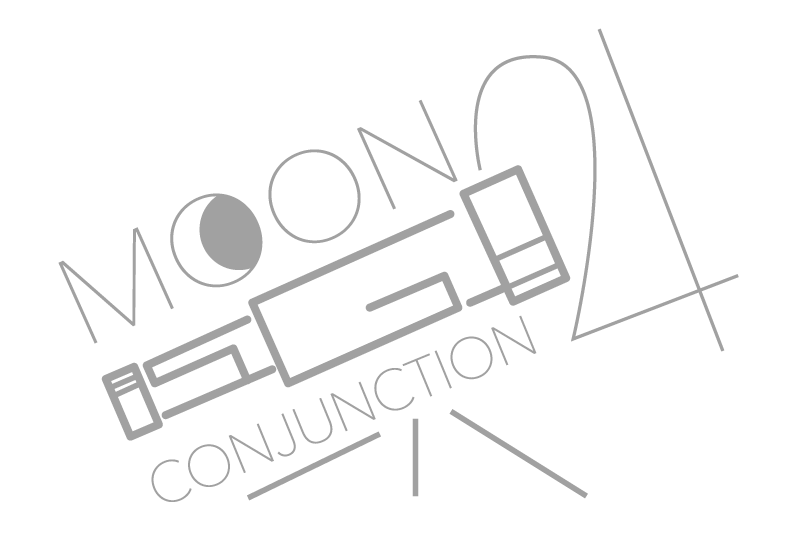

Local frame review
Astronomy Sub Analyser
v0.4.16
On-premise
FITS/XISF
Select one or more folders and click Analyse.
Moon Impact
Moon impact is shown once per observing night. The range reports how the applied Moon score reduction varied during that night. Detailed astronomical context remains available in CSV.
Manage observing sites
Header coordinates are used first. Detected coordinates can be given a saved name; folder assignments only fill missing locations.
Add location manually
Frame Types
Filters
Object Shots
Result Groups
Keeper Thresholds By Filter
Output folder: not selected